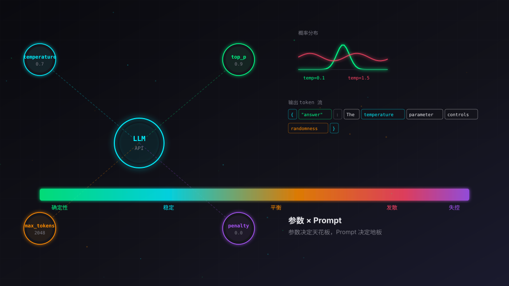
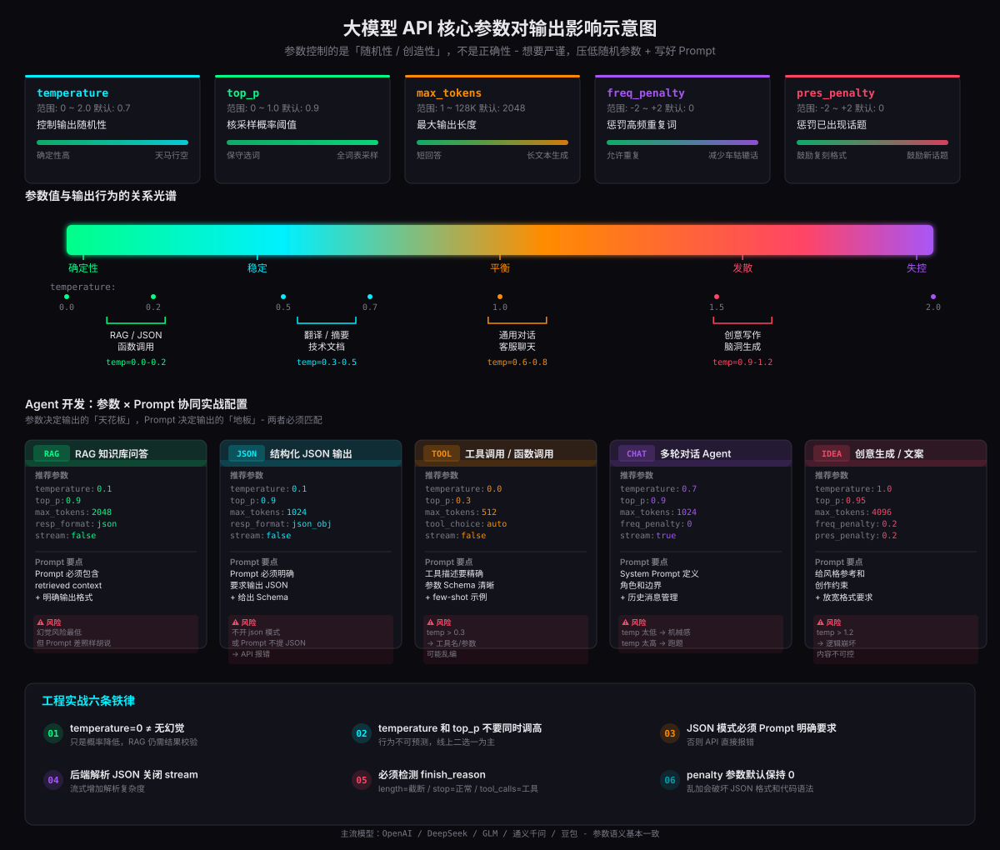

很多开发者第一次调大模型 API，面对 temperature、top_p、max_tokens、frequency_penalty 一堆参数，要么全用默认值不敢动，要么随手一调结果完全不可控。更常见的情况是：Agent 项目在测试环境跑得好好的，一上生产就开始胡说八道、JSON 解析报错、工具调用乱编参数。
问题的根源不是模型不够聪明，而是参数和 Prompt 没有协同。大模型 API 的参数控制的是输出的「随机性 / 创造性」，不是控制正确性。想要严谨输出，不是调大模型智商，而是压低随机参数 + 写好 Prompt。本文系统拆解 7 大核心参数的语义、取值范围、场景搭配，并结合 Agent 开发的真实需求，给出参数 × Prompt 协同的实战方法论。
一、核心认知：参数控制什么，不控制什么
在深入每个参数之前，必须先建立一个正确的心智模型。这是所有后续配置决策的基础。
打个比方：大模型像一个读过万卷书的人。参数决定这个人回答你时是「严谨复述」还是「自由发挥」，但它脑子里有没有这个知识，是训练阶段就定了的。Prompt 决定你问的问题够不够清晰、给的上下文够不够充分，参数决定它回答时有多大的「自由度」。
因此，生产环境的核心策略是：参数决定输出的天花板（多样性上限），Prompt 决定输出的地板（质量下限）。两者必须匹配 - 低 temperature 配精准 Prompt 可以做到极高一致性；高 temperature 配松散 Prompt 只会得到不可控的垃圾输出。
二、7 大核心参数逐一拆解
2.1 temperature 温度 - 最常用也是最危险的参数
temperature 是开发者接触最多、也最容易误用的参数。取值范围 0 ~ 2.0，大部分 API 默认 0.7。
本质：对 token 概率分布做缩放。temperature = 0 时，模型优先选概率最高的词，输出几乎确定；temperature 升高，模型愿意选择概率更低的 token，多样性和想象力提升，但幻觉和胡说概率同步上升。
| 场景 | temperature 推荐 | 说明 |
|---|---|---|
| 工具调用、函数调用、结构化输出(JSON)、代码生成、数据抽取、企业RAG问答 | 0.0 ~ 0.2 | 尽量稳定、少幻觉，不要自由发挥 |
| 业务文案摘要、需求分析、技术文档、翻译 | 0.3 ~ 0.5 | 兼顾通顺，适度灵活，拒绝乱编 |
| 通用对话、头脑风暴、普通客服聊天 | 0.6 ~ 0.8 | API 常见默认值，平衡稳定与自然 |
| 小说创作、故事、创意文案、写诗、脑洞生成 | 0.9 ~ 1.2 | 鼓励多样性，接受部分不合理内容 |
2.2 top_p 核采样 - temperature 的搭档而非替代
取值范围 0 ~ 1.0，默认一般 0.7~0.9。top_p 按累计概率阈值选取候选词集合，只从概率累加达到 top_p 的 token 池子里采样。
top_p=0.1：只选概率最高的一小部分 token，输出保守，变化很小top_p=0.9：取累计概率 90% 的候选，允许更多备选词top_p=1.0：启用全部词表，完全由 temperature 控制
2.3 max_tokens 最大输出长度
max_tokens 控制最大输出 token 数量，不是总上下文。输入 prompt 不算在内。1 token ≈ 0.75 中文汉字，2000 token ≈ 1500 汉字。
最大风险：输出达到 max_tokens 会强制截断，返回半截文本。业务上必须检测 finish_reason="length" 做判断，否则下游解析 JSON 会直接报错。
| 场景 | max_tokens 推荐 | 说明 |
|---|---|---|
| 短回答、JSON 工具调用 | 512 ~ 1024 | 够用即可，避免浪费 |
| 文档摘要、分析 | 2048 ~ 4096 | 中等长度输出 |
| 长文本生成、报告 | 模型上限 | 注意计费，token 越多越贵 |
2.4 stop 停止符
自定义字符串列表，模型输出遇到该字符串立刻终止，不返回 stop 字符串本身。例如 stop:["\\n\\n---","###"]。
三个典型使用场景：
- 多轮 Prompt 模板：防止模型模拟用户说话，到用户轮次标记就停
- 结构化输出：到结束标记就截断，避免模型继续编内容
- Agent 循环调用：防止模型无限续写，在特定边界自动停止
2.5 presence_penalty 与 frequency_penalty - 两个惩罚参数
这两个参数容易混淆，但语义不同：
| 参数 | 范围 | 语义 | 正数效果 | 负数效果 |
|---|---|---|---|---|
| presence_penalty | -2 ~ +2 | 惩罚已经出现过的 token | 鼓励新话题，减少重复 | 鼓励复刻固定格式 |
| frequency_penalty | -2 ~ +2 | 惩罚高频重复的 token | 降低词句重复 | 鼓励重复关键词 |
简单记：presence_penalty 看有没有出现过，frequency_penalty 看出现了多少次。
2.6 response_format 返回格式
现代 API 支持两种模式：
{ "type":"text" }：普通文本输出{ "type":"json_object" }：强制输出合法 JSON
2.7 stream 流式开关 与 tool_choice 工具调用
stream 控制返回方式：
stream=true：SSE 流式返回，边生成边返回，前端打字机效果，适合聊天界面stream=false：等待全部生成完一次性返回。后端业务处理、解析 JSON、API 调用优先用非流式，代码处理简单
tool_choice 控制工具调用行为：
auto：模型自己决定要不要调用工具required：强制必须调用工具none：禁止调用任何工具
Agent 场景常用策略：查询外部数据时用 auto 让模型自主判断；需要必须查数据库时设 required 确保不跳过。
三、参数影响全景示意图
下图将 7 大核心参数的取值范围、场景分布、以及参数 × Prompt 的协同配置浓缩在一张图中。上半部分是参数卡片和输出行为光谱，下半部分是 5 个 Agent 典型场景的推荐参数 + Prompt 要点 + 风险提示，底部是工程实战六条铁律。

图中光谱条从左到右依次为「确定性 → 稳定 → 平衡 → 发散 → 失控」，对应 temperature 从 0.0 到 2.0 的变化。每个场景卡片标注了推荐参数值、Prompt 编写要点和踩坑风险，可以直接作为配置参考。
四、Agent 开发中参数 × Prompt 的协同实战
理解了单个参数的语义还不够。Agent 开发的核心挑战是：参数和 Prompt 必须协同，否则参数调得再好，Prompt 写得烂照样翻车。下面通过 5 个真实场景，拆解参数 × Prompt 的协同策略。
4.1 场景一：RAG 知识库问答
RAG 是企业 Agent 最常见的场景。核心诉求是：基于检索到的上下文回答，不要胡编。
参数策略：temperature=0.1, top_p=0.9, max_tokens=2048, stream=false。低温度确保忠于检索内容，不开 JSON 模式（RAG 答案通常是自然语言）。
Prompt 协同要点：
- Prompt 必须包含 retrieved context，且明确标注「以下是参考资料」
- 明确指令：「请仅基于以下参考资料回答，如果资料中没有相关信息，请回答"我不知道"」
- 给出输出格式要求，避免模型自由发挥长度
4.2 场景二：结构化 JSON 输出
Agent 做数据抽取、意图分类、信息结构化时，需要模型输出严格合法的 JSON。这是翻车重灾区。
参数策略：temperature=0.1, top_p=0.9, max_tokens=1024, response_format={"type":"json_object"}, stream=false。
Prompt 协同要点：
- Prompt 必须明确要求输出 JSON（否则 API 报错）
- 给出 JSON Schema 或示例，明确字段名和类型
- 后端关闭 stream，一次性拿到完整 JSON 再解析
4.3 场景三：工具调用 / 函数调用
Agent 调用外部工具（查询数据库、调 API、执行代码）时，参数稳定性直接决定工具名和参数值是否正确。
参数策略：temperature=0.0, top_p=0.3, max_tokens=512, tool_choice=auto, stream=false。温度压到最低，确保工具名和参数值不乱编。
Prompt 协同要点：
- 工具描述要精确：函数名、参数名、参数类型、返回值格式全部写清
- 参数 Schema 清晰：用 JSON Schema 描述每个参数的类型和约束
- 给 few-shot 示例：展示几个正确的工具调用案例
4.4 场景四：多轮对话 Agent
客服聊天、个人助手等场景需要自然流畅的多轮对话。温度太低显得机械，太高容易跑题。
参数策略：temperature=0.7, top_p=0.9, max_tokens=1024, frequency_penalty=0, stream=true。中等温度兼顾自然和稳定，开流式提升用户体验。
Prompt 协同要点：
- System Prompt 定义角色、能力边界和行为规范
- 历史消息管理：超出上下文窗口时要做摘要压缩，不能直接截断
- 明确「不知道就说不知道」的兜底指令
4.5 场景五：创意生成 / 文案写作
营销文案、故事创作、头脑风暴等场景需要发散思维，参数配置与严谨场景完全相反。
参数策略：temperature=1.0, top_p=0.95, max_tokens=4096, frequency_penalty=0.2, presence_penalty=0.2。高温度鼓励多样性，penalty 轻微正值避免车轱辘话。
Prompt 协同要点：
- 给风格参考和创作约束，而不是放任自由
- 放宽格式要求，允许模型发挥
- 设置 stop 序列防止无限续写
五、5 套可直接复制的生产配置模板
以下 5 套参数模板覆盖了 Agent 开发的主流场景，可以直接复制使用。每套模板都经过生产验证，配合对应的 Prompt 策略可以快速落地。
六、工程踩坑总结：6 条生产铁律
以下是 Agent 上生产环境前必须知道的 6 条铁律，每一条都是用真实事故换来的教训。
stop=正常结束；length=被 max_tokens 截断（业务要做异常处理）；tool_calls=工具调用结束。不检测 length，JSON 被截断成半截，下游全崩。七、Agent 上生产检查清单
以下清单覆盖了 Agent 项目上生产前必须验证的参数与 Prompt 相关关键项：
- temperature 和 top_p 没有同时调高，一个为主另一个固定
- 工具调用 / JSON 输出场景 temperature ≤ 0.2
- max_tokens 设置合理，够用即可，不盲目开大
- frequency_penalty / presence_penalty 保持 0（除非长文本场景）
- JSON 输出场景开启了 response_format=json_object
- 后端业务处理场景 stream=false
- RAG 场景 Prompt 包含 retrieved context 且标注「参考资料」
- RAG 场景 Prompt 包含「不要编造」指令
- JSON 输出场景 Prompt 明确要求输出 JSON 且给出 Schema
- 工具调用场景工具描述精确、参数 Schema 清晰、有 few-shot 示例
- 多轮对话场景 System Prompt 定义了角色和能力边界
- 所有场景 Prompt 都包含「不知道就说不知道」的兜底指令
- 检测 finish_reason，length 截断有异常处理逻辑
- JSON 解析有 try-catch，解析失败有重试或降级策略
- 工具调用失败有重试机制，重试次数可配
- 模型超时有熔断和降级策略
- 流式输出有断线重连机制（如使用 stream=true）
结语
大模型 API 的参数不是玄学，是有明确语义的工程工具。temperature 控制随机性，top_p 控制候选词池，max_tokens 控制输出长度，penalty 控制重复度 - 每个参数都有明确的作用域和副作用。理解了这些，参数配置就从「试错」变成了「设计」。
但参数只是故事的一半。Agent 开发的真正难点在于参数 × Prompt 的协同：低 temperature 配精准 Prompt 可以做到极高一致性；高 temperature 配松散 Prompt 只会得到不可控的垃圾。参数决定输出的天花板，Prompt 决定输出的地板 - 两者必须匹配，缺一不可。
最后记住一条核心原则：参数控制的是「随机性 / 创造性」，不是正确性。想要严谨输出，不是调大模型智商，而是压低随机参数 + 写好 Prompt。这 12 个字，比任何参数调优技巧都重要。
参考资料
- OpenAI API 参数文档 https://platform.openai.com/docs/api-reference/chat
- DeepSeek API 文档 https://platform.deepseek.com/api-docs
- 智谱 GLM API 文档 https://open.bigmodel.cn/dev/api
- 通义千问 API 文档 https://help.aliyun.com/zh/dashscope/developer-reference/api-details
- 豆包 API 文档 https://www.volcengine.com/docs/82379
- Hugging Face - How to generate text https://huggingface.co/blog/how-to-generate